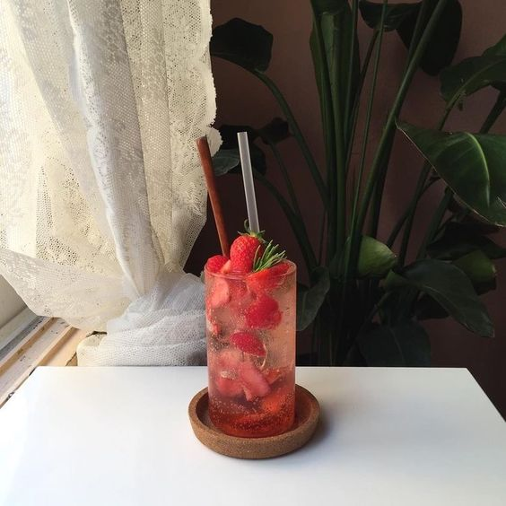
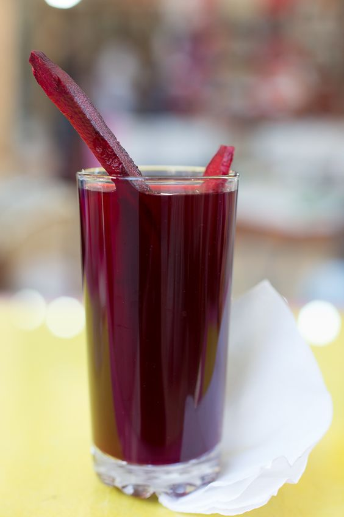

Back
Food
Dessert

Strawberry Lemonade
Ingredients:
1 cup fresh strawberries
3-4 lemons
1/2 cup granulated sugar (adjust to taste)
4 cups water
Ice cubes
Instructions:
Wash the strawberries, remove the stems, and slice them.
Zest and juice the lemons. Set the lemon juice aside in a separate container.
In a saucepan, combine the granulated sugar and water. Bring to a boil over medium heat, stirring to dissolve the sugar. Remove from heat and let it cool.
Add the lemon juice and lemon zest to the cooled sugar water.
Mix in the sliced strawberries.
Use a blender or immersion blender to thoroughly blend the mixture.
Strain the mixture through a sieve to remove any seeds.
Chill the prepared strawberry lemonade in the refrigerator for a while.
Place ice cubes in glasses and pour the lemonade over the ice.
Optionally, garnish with lemon or strawberry slices before serving.

Turnip Juice
Ingredients:
2 large purple turnips
2 tablespoons of salt
2 tablespoons of vinegar (optional)
2 tablespoons of pomegranate molasses (optional)
1/4 cup of lemon juice
1 teaspoon of sugar (optional)
1-2 cloves of garlic (optional)
Onion (optional)
Carrot (optional)
Whole black peppercorns (optional)
Dried thyme (optional)
Instructions:
Wash and peel the turnips, then slice them into rounds.
Place the sliced turnips in a container.
Add salt, vinegar, pomegranate molasses (if using), lemon juice, and optionally sugar.
Add water to cover the turnips and mix the ingredients well.
Add optional ingredients such as garlic, onion, carrot, whole black peppercorns, and dried thyme.
Pour the mixture into a jar or glass container.
Seal the lid tightly and let it sit at room temperature for 2-3 days. During this time, the turnips will undergo fermentation.
Once the fermentation period is over, your şalgam will be ready.
You can optionally add garlic, dried thyme, or whole black peppercorns while bottling the şalgam.
After cooling, store the şalgam in the refrigerator.
When serving, you can dilute the şalgam with ice or cold water according to your preference.